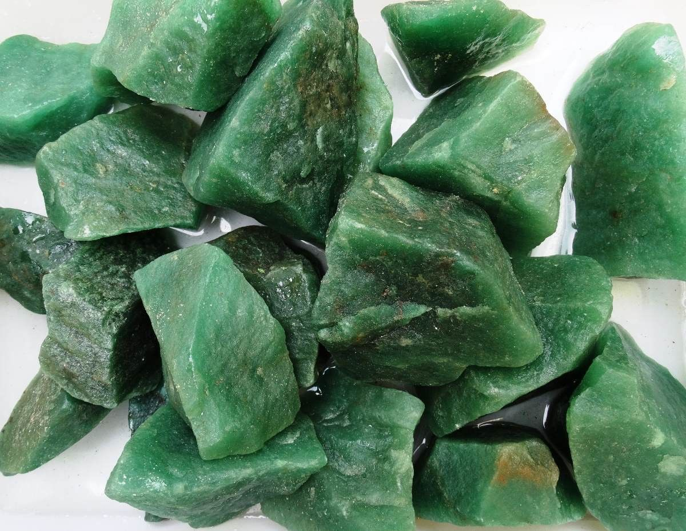

Everything About Jade: The Ultimate Guide to Understanding Jade
Jade, a captivating gemstone with a rich history and diverse symbolism, has enchanted civilizations across the globe for millennia. Revered for its beauty, durability, and supposed mystical properties, jade has been a coveted material for crafting exquisite jewelry, sculptures, and ceremonial objects. This comprehensive guide will delve into the multifaceted world of jade, unraveling its secrets, exploring its cultural significance, and providing valuable insights for collectors and enthusiasts alike.
What is Jade?
The term "jade" refers to two distinct minerals, jadeite and nephrite, both belonging to the silicate family. Although they share similar physical properties, such as toughness and a smooth texture, they differ in chemical composition and crystalline structure.
- Jadeite: This rarer and more precious form of jade is composed primarily of sodium and aluminum silicate. It boasts a wider range of colors, including vibrant greens, lavender, red, and black, and is prized for its translucency and vitreous luster.
- Nephrite: This more common variety of jade is composed mainly of calcium and magnesium silicate. It typically occurs in shades of green, ranging from light to dark, and may also exhibit white, yellow, or black hues. Nephrite is renowned for its toughness and durability, making it ideal for carving intricate designs.
| Feature | Jadeite | Nephrite |
|---|---|---|
| Rarity | Rarer | More common |
| Value | Generally more valuable | Less valuable than jadeite |
| Colors | Vibrant green, lavender, red, orange, white | Green, black, white, brown |
| Translucence | Often exhibits translucence | Usually opaque |
| Hardness | Slightly harder than nephrite | Slightly softer than jadeite |
| Composition | Sodium aluminum silicate | Calcium magnesium silicate |
Understanding Jade: A Brief History and Cultural Significance
Jade holds immense cultural significance in various parts of the world, particularly in East Asia, where it has been cherished for centuries.
- China: Jade is deeply ingrained in Chinese culture, symbolizing virtues such as purity, nobility, and longevity. It has been used to create exquisite jewelry, ceremonial objects, and even burial suits for emperors. Jade is also believed to possess protective powers and promote good health.
- Maori: In Maori culture, jade, known as "pounamu," is considered a sacred stone with spiritual significance. It is used to create intricate carvings, tools, and weapons, representing ancestral connections and tribal identity.
- Mesoamerica: Jade was highly valued by ancient Mesoamerican civilizations, such as the Maya and Aztecs. It was used to create elaborate masks, jewelry, and ritual objects, often associated with deities and the afterlife.
How to Identify Real Jade

With the growing popularity of jade, the market is flooded with imitations and counterfeit products. Therefore, it's crucial to know how to distinguish genuine jade from fakes.
- The Sound Test: Gently tap a piece of jade against another object. Authentic jade should produce a clear, resonant sound, similar to a chime.
- The Feel Test: Real jade feels cool and smooth to the touch, even in warm environments. Imitations may feel warm or slightly sticky.
- The Scratch Test: Jade is a relatively hard gemstone, ranking between 6.5 and 7 on the Mohs hardness scale. It should not be easily scratched by a steel knife or other sharp object.
- The Light Test: Hold a piece of jade up to a light source. Genuine jade should exhibit a slight translucence, allowing some light to pass through.
- Professional Appraisal: For valuable jade pieces, seek the expertise of a certified gemologist to verify their authenticity.
Jade Colors and Their Meanings
Jade comes in a mesmerizing array of colors, each carrying unique symbolism and significance.
- Green: The most popular and sought-after color, symbolizing prosperity, good fortune, and harmony with nature.
- Lavender: Represents grace, elegance, and refinement.
- Red: Symbolizes vitality, passion, and good luck.
- Black: Represents protection, grounding, and strength.
- White: Signifies purity, innocence, and spirituality.
- Yellow: Represents happiness, optimism, and intellectual growth.
How to Invest in Jade
Jade has proven to be a lucrative investment option for many collectors and enthusiasts. However, like any investment, it's essential to conduct thorough research and understand the market trends before venturing into it.
- Types of Jade Investments: You can invest in raw jade, jade jewelry, or jade carvings. Each category has its own set of advantages and disadvantages, depending on your preferences and investment goals.
- Factors Affecting Jade Value: The value of jade is determined by various factors, including color, translucency, texture, craftsmanship, and historical significance.
- Jade Certification: Ensure that any jade you purchase is accompanied by a reputable certification from a gemological laboratory. This certification will verify the authenticity and quality of the jade, ensuring its value.
- Quality: Opt for jade with vibrant color, even texture, and minimal flaws.
- Provenance: Jade with documented historical or cultural significance often commands higher prices.
- Market Trends: Stay informed about current market trends and demand for specific jade varieties.
Where to Buy Authentic Jade
To avoid purchasing counterfeit jade, it's crucial to buy from reputable dealers and sources.
- Reputable Jewelers: Established jewelers with a proven track record are more likely to offer authentic jade.
- Jade Auctions: Reputable auction houses, such as Sotheby's and Christie's, often feature jade collections from renowned collectors.
- Jade Shows and Exhibitions: Attend jade shows and exhibitions to meet reputable dealers and learn more about the jade market.
- Certified Gemologists: Gemologists with credentials from recognized organizations adhere to strict ethical standards and can provide expert guidance.
- Online Marketplaces: Online marketplaces such as shop.rockhounding.org can be a great place to find jade, but it's important to do your research before making any purchases. Read the item description carefully and ask questions if you have any concerns about authenticity.
Jade Value: Factors Influencing Price
The value of jade depends on several factors:
- Color: Vibrant, even color distribution commands higher prices, with "Imperial Green" jadeite being the most sought-after.
- Translucence: Jade with greater translucence allows light to penetrate, enhancing its beauty and value.
- Texture: Fine-grained jade with a smooth, waxy feel is more desirable.
- Carving: Intricate carvings by skilled artisans can significantly increase a jade piece's value.
- Rarity: Rare jade varieties, such as lavender jadeite, fetch premium prices.
- Historical Significance: Jade artifacts with documented historical or cultural provenance often command exorbitant prices.
Jade Sources: Where Jade is Found
Jade deposits are found in various parts of the world, including:
- Myanmar (Burma): Renowned for producing high-quality jadeite, particularly the coveted "Imperial Green" variety.
- China: A significant source of both jadeite and nephrite, with a rich history of jade carving and craftsmanship.
- Guatemala: Known for producing vibrant green jadeite with unique color variations.
- Russia: A major source of nephrite, particularly the Siberian green variety.
- Canada: Home to nephrite deposits, primarily in British Columbia.
- New Zealand: Renowned for its Maori jade, or "pounamu," which is highly valued for its cultural significance.
Jade Locations in the US: Discovering Jade in America
While not as abundant as in other parts of the world, jade deposits can be found in several locations in the United States, including:
- California: Jade Cove in Big Sur is known for its nephrite deposits.
- Wyoming: Jade can be found in the Granite Mountains.
- Alaska: Jade deposits exist in various regions, including the Kobuk River valley.
RELATED TOPIC: Amethyst: Exploring Its Meaning, Uses and Properties
Jade Jewelry: Timeless Elegance

Jade's versatility and aesthetic appeal make it a popular choice for jewelry. From delicate pendants to elaborate bangles, jade jewelry exudes timeless elegance and cultural significance. Popular jade jewelry designs include:
- Bangles: Believed to protect the wearer from harm and bring good fortune.
- Pendants: Often carved with symbolic motifs representing luck, prosperity, or spiritual beliefs.
- Rings: Jade rings can be adorned with intricate carvings or simply showcase the natural beauty of the stone.
- Earrings: Jade earrings range from simple studs to elaborate chandeliers, adding a touch of elegance to any ensemble.
Caring for Your Jade
To preserve the beauty and longevity of your jade jewelry or carvings, follow these care tips:
- Clean Gently: Use a soft cloth and mild soapy water to clean your jade. Avoid harsh chemicals and abrasive cleaners.
- Store Properly: Store your jade in a soft pouch or box to prevent scratches and damage.
- Avoid Extreme Temperatures: Protect your jade from sudden temperature changes, as this can cause it to crack.
- Regularly Inspect: Inspect your jade jewelry for loose settings or damage. Have it professionally repaired if needed.
Conclusion
Jade's allure lies in its timeless beauty, rich history, and cultural significance. By understanding its different types, colors, and meanings, you can appreciate its multifaceted nature and make informed decisions when purchasing or investing in jade. Remember to always buy from reputable sources and care for your jade to ensure its enduring beauty for generations to come.